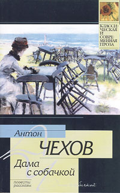

Дама с собачкой
Полное многостраничное HTML-издание рассказа (4 главы), с закладками, заметками и тремя темами чтения. Работает автономно, без интернета.
«Говорили, что на набережной появилось новое лицо: дама с собачкой.»
А. П. Чехов. «Дама с собачкой», глава I

Ваши закладки и заметки
Оглавление (4 страницы)
Текст: электронное издание на основе общедоступной версии. Чехов умер в 1904 году, и произведение находится в общественном достоянии.